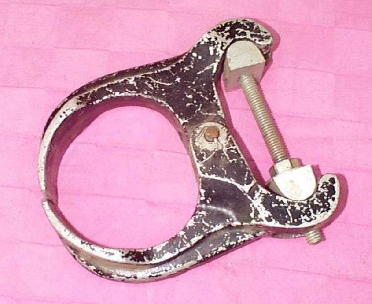
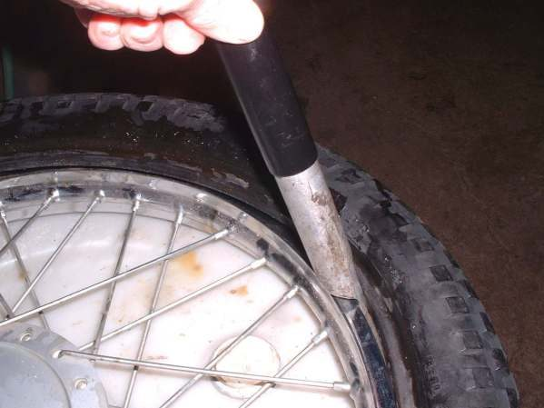
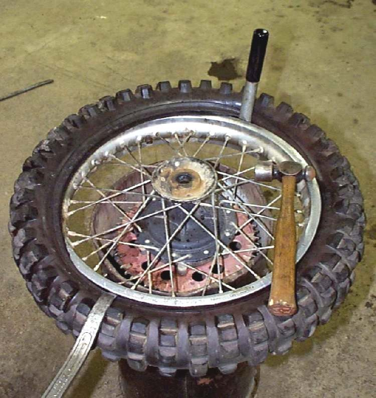
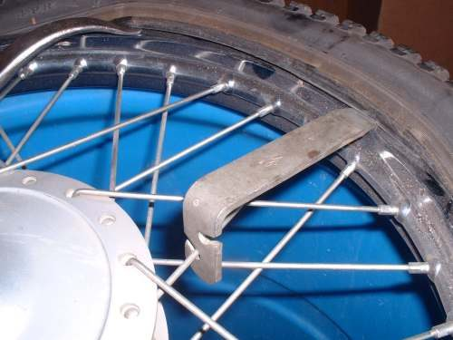

Fitting a tyre needs bead-breaking and mounting tools and, for tubeless tyres, a large volume of air to seat the bead. A mistake can crack an alloy rim, pinch a tube or leave the bead half seated. This page explains how to choose the right tyre, what the workshop should do and what to check when you collect the bike.
Safety
- A cracked or bent rim can burst during inflation. The rim must be checked before a tyre goes on.
- Never exceed the bead-seating pressure printed on the tyre when seating the bead. Keep your face and body away from the wheel while it seats.
- New tyres are slippery for the first kilometres because of mould release agent. Ride gently, avoid hard braking and lean.
Before you buy
- Read the size on the old tyre and check it against the manual. K-Light 125: front 90/90-17, rear 130/90-15, tubeless. Do not fit a different size unless the maker allows it: a bigger tyre can rub, a smaller one may not carry the load.
- Match the type: tubeless (TL) on a tubeless rim, tube type (TT) with a tube.
- Match the load index and speed rating to the manual or better.
- Check the date code on the new tyre (four digits: week then year). Ask for fresh stock.
- If the tyre is marked "front" or "rear", fit it only there. Avoid fitting a new front with a badly worn rear or very different types front and rear: the bike can become unstable.
What the workshop should do
- Remove the wheel (front, rear), keeping spacers in order.
- Break the bead and remove the tyre without scratching the rim (pads on alloy rims).
- Inspect the rim for cracks, dents and corrosion on the bead seat; clean the bead seat. On spoked wheels, check spokes and rim tape first (Check and tighten spokes).
- Fit a new rubber valve with every new tubeless tyre, unless a metal valve is fitted. For tube tyres, fit a new tube if the old one is old or patched.
- Lubricate the beads, fit the tyre with the arrow pointing forward and the paint dot (light spot) at the valve.
- Seat the beads, check the moulded line is even all round, set the cold pressure (Check tyre pressure).
- Balance the wheel (Balance a wheel).
- Wash off mounting lubricant from the tyre and rim.
- Refit the wheel, tighten the axle to the bike's value, fit new split pins, pump the brake, spin the wheel to check it runs true and free.
What to check when you collect the bike
- Ask to see the old tyre and the date code on the new one.
- Arrow points forward. Pressure correct. Valve cap fitted.
- Front brake and rear brake work before you ride away. Chain slack correct on the rear (Check and adjust chain slack).
- Wheel spins without wobble or drag.
Do not attempt at home
- Seating a tubeless bead with a small hand pump or with flammable sprays.
- Levering tyres off alloy rims with screwdrivers.
Reference values (K-Light 125)
| Item | Value | Source |
|---|---|---|
| Front tyre | 90/90-17 tubeless | K-Light 125 manual, PDF p. 19 |
| Rear tyre | 130/90-15 tubeless | K-Light 125 manual, PDF p. 19 |
| Cold pressure front / rear | 190 ± 10 kPa / 210 ± 10 kPa | K-Light 125 manual, PDF p. 71 |